Coat — study after Dior
2024Study afterTweed
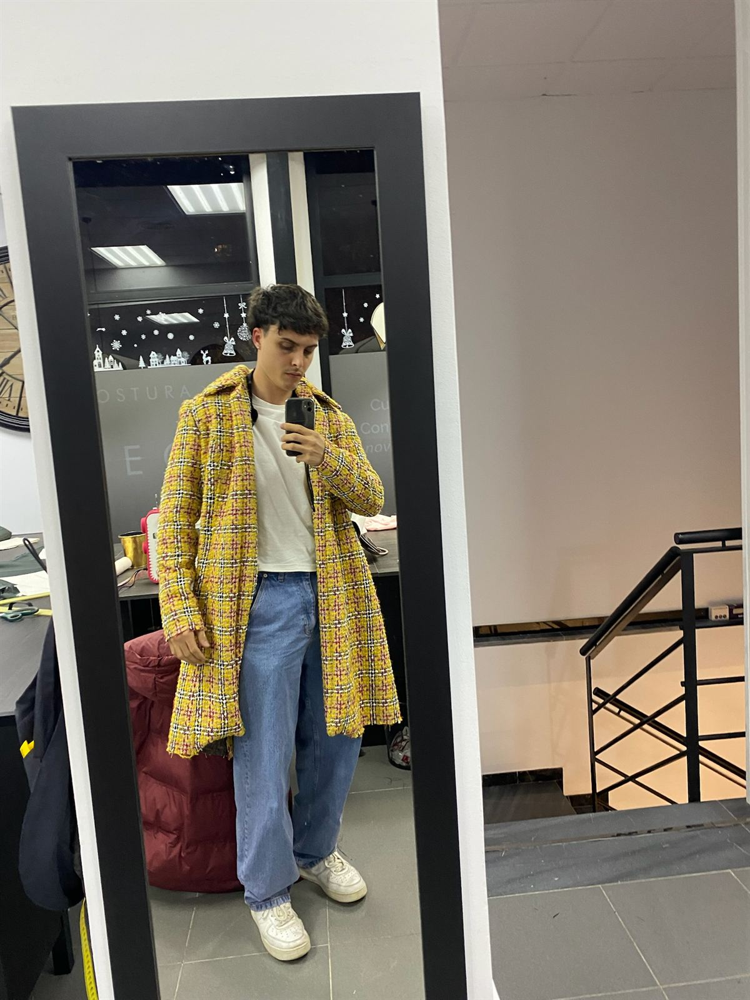
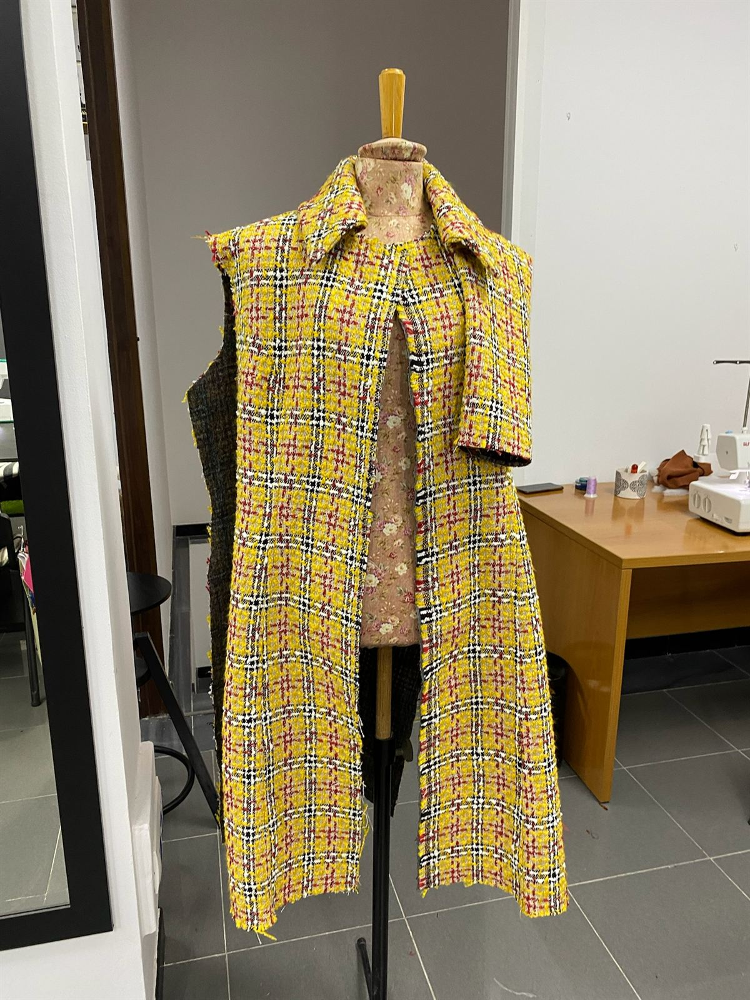
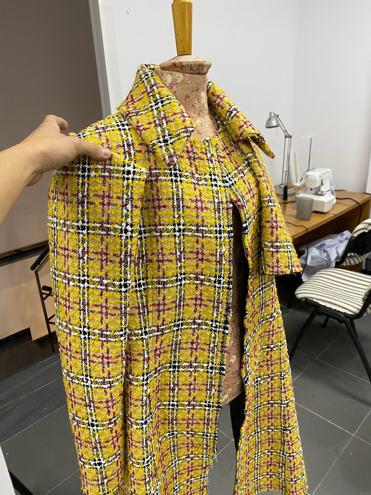

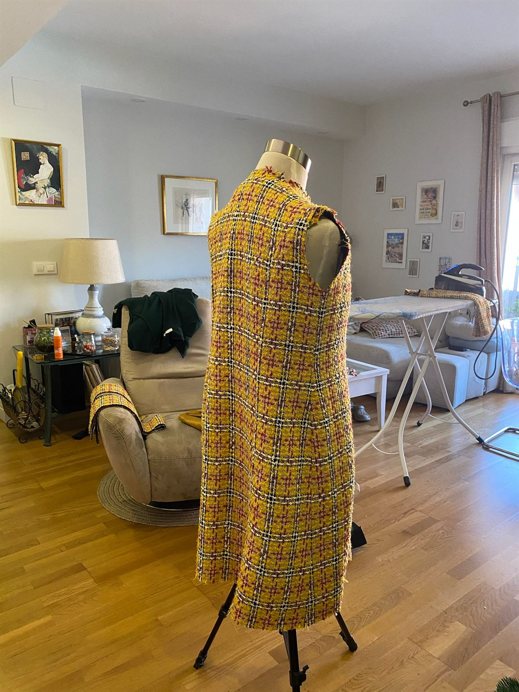
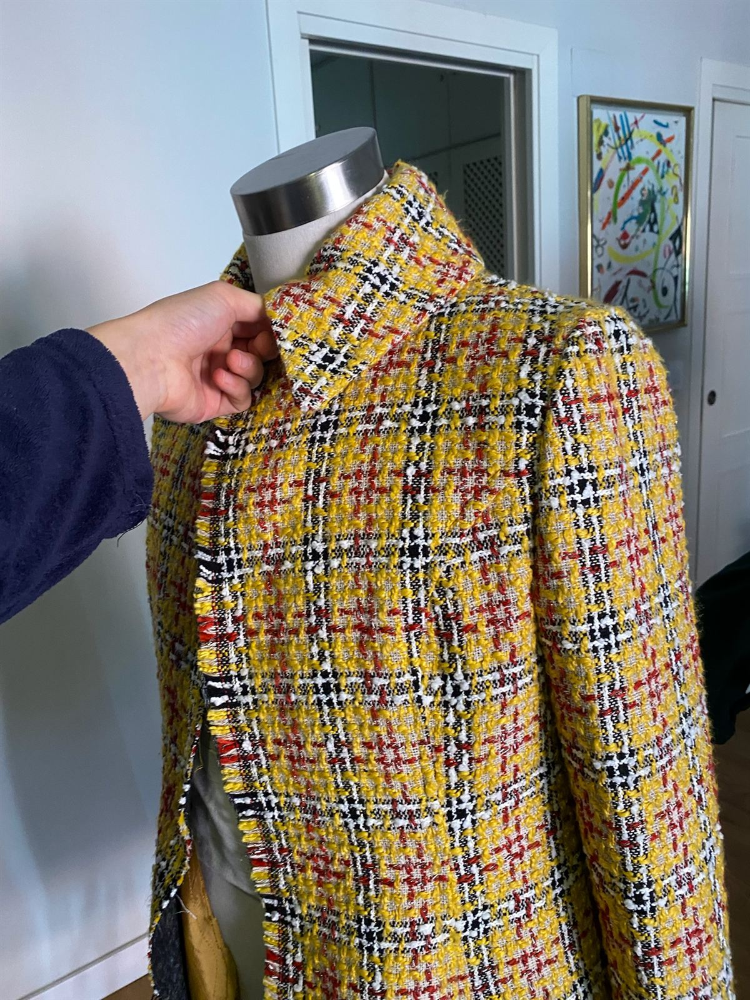
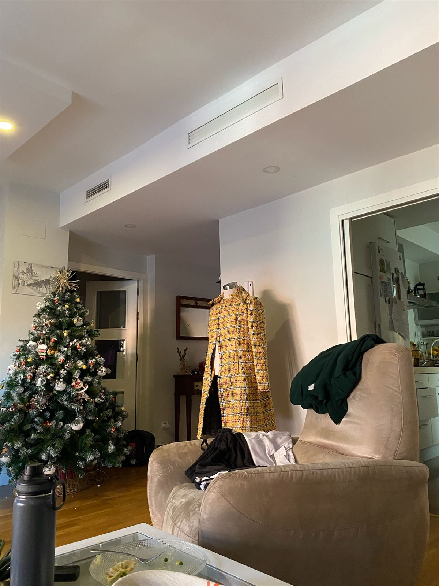
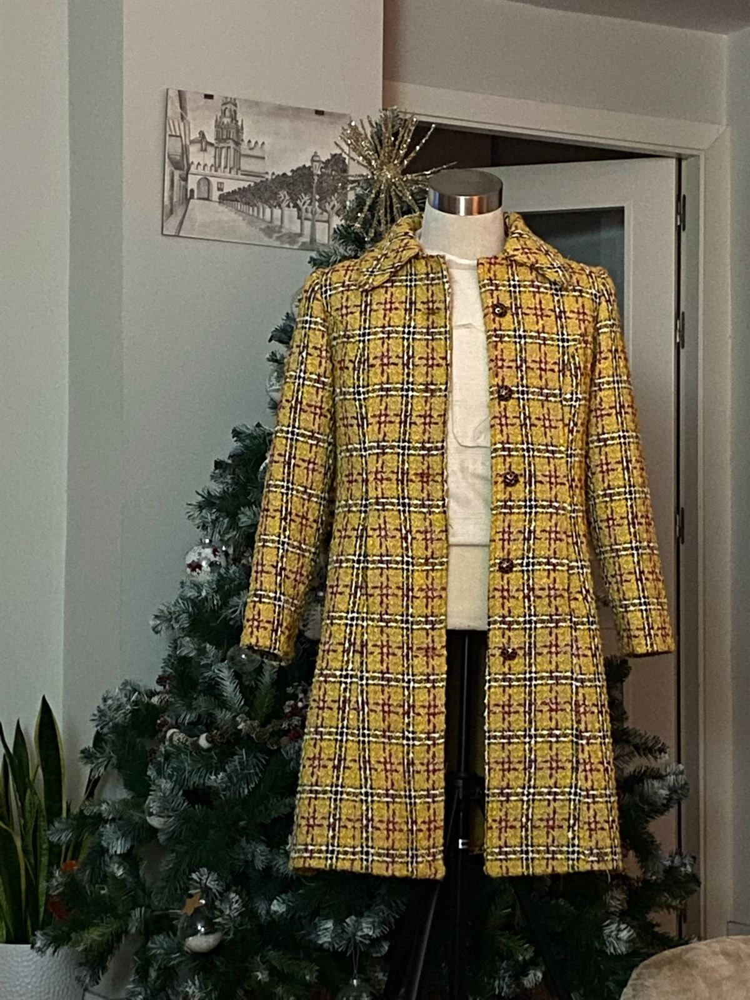
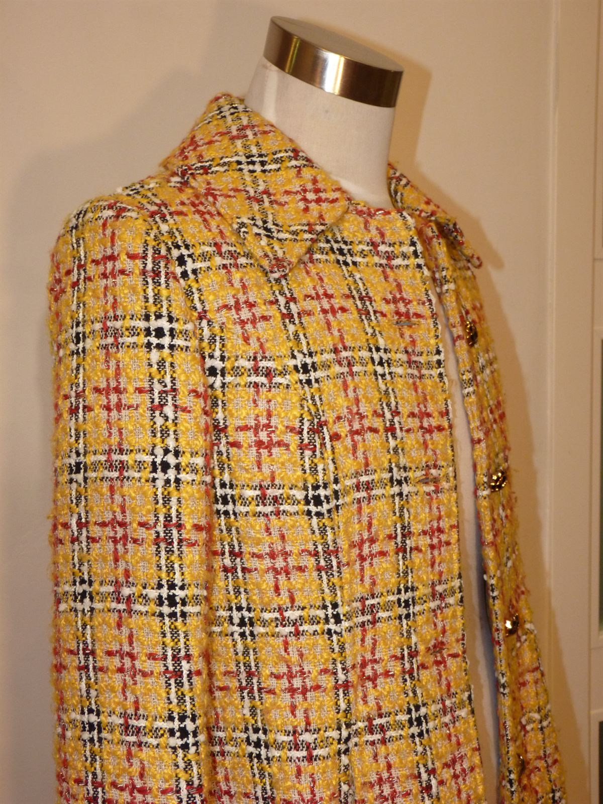

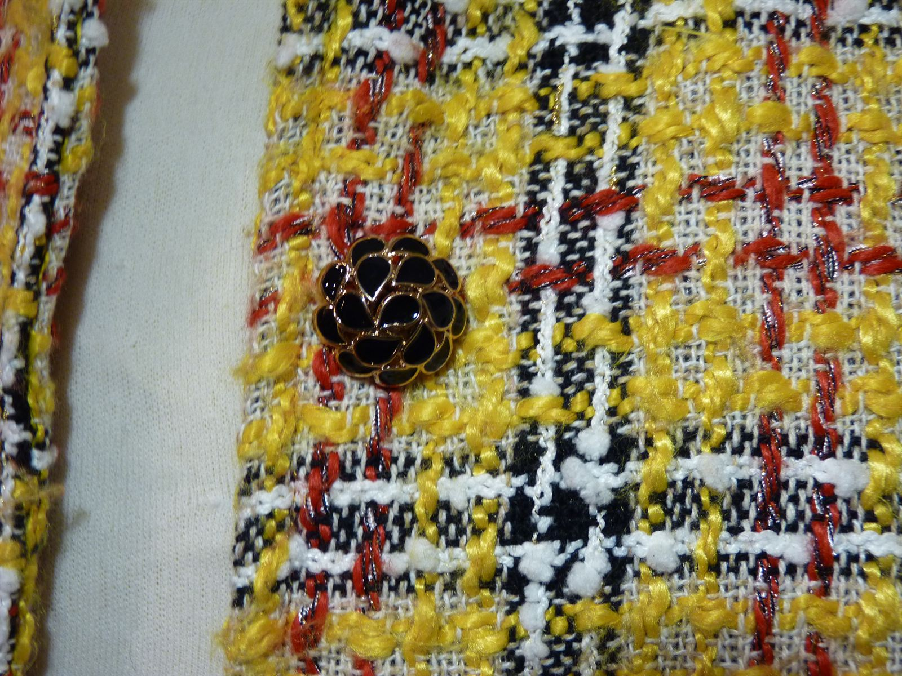
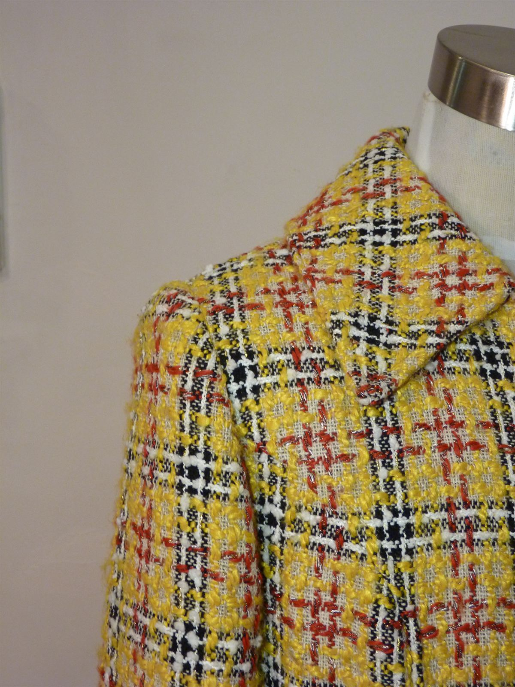
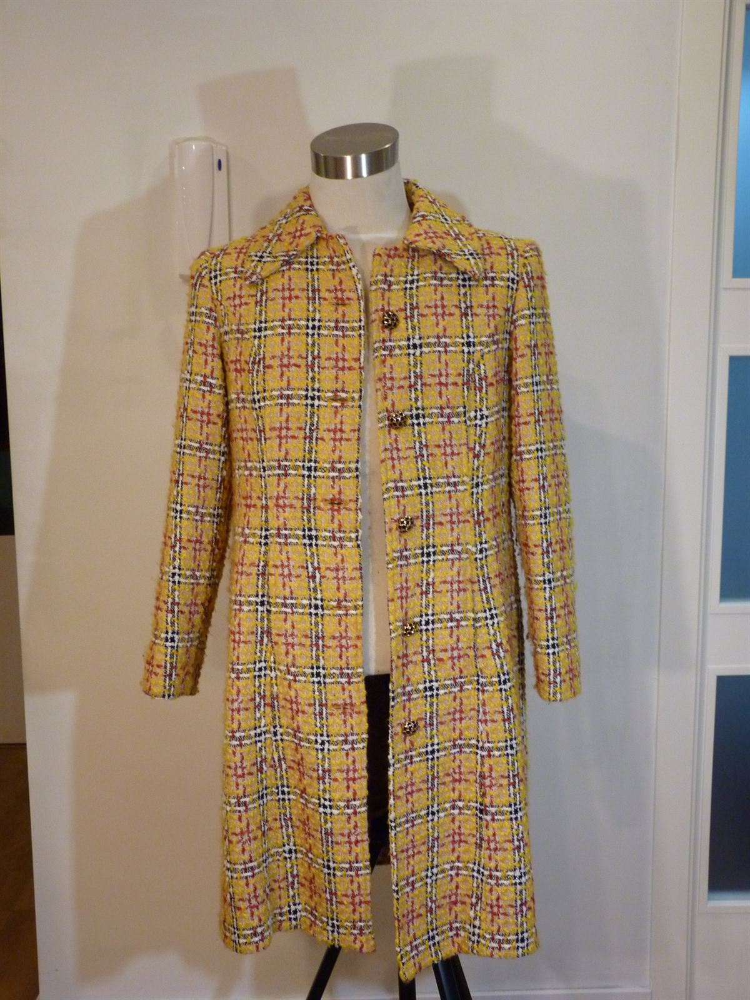
The brief
Dior’s tailoring is built on the shoulder and the waist, and I wanted to understand how a coat can be structured and still look soft. The yellow tweed made the choice for me.
The pattern
Adapted from a tailored coat block. The main decision was the shoulder: a thin canvas interlining and a small pad, so the tweed holds its line without looking stiff. I matched the check across both front edges.
Spec
- Year
- 2024
- Reference
- Long tweed coat, Dior
- Pattern
- Adapted from a tailored coat block
- Materials
- Wool-blend tweed, canvas interlining, enamel buttons
- Build time
- Five weeks
- Where it is
- In my wardrobe
What I learned
Tweed frays the moment it is cut, so I stay-stitched every edge before handling it. The hardest part was matching the check at the collar; I cut it three times.